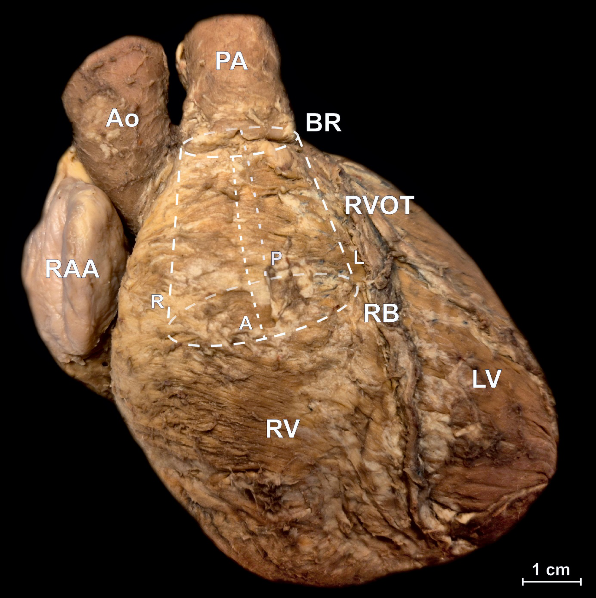
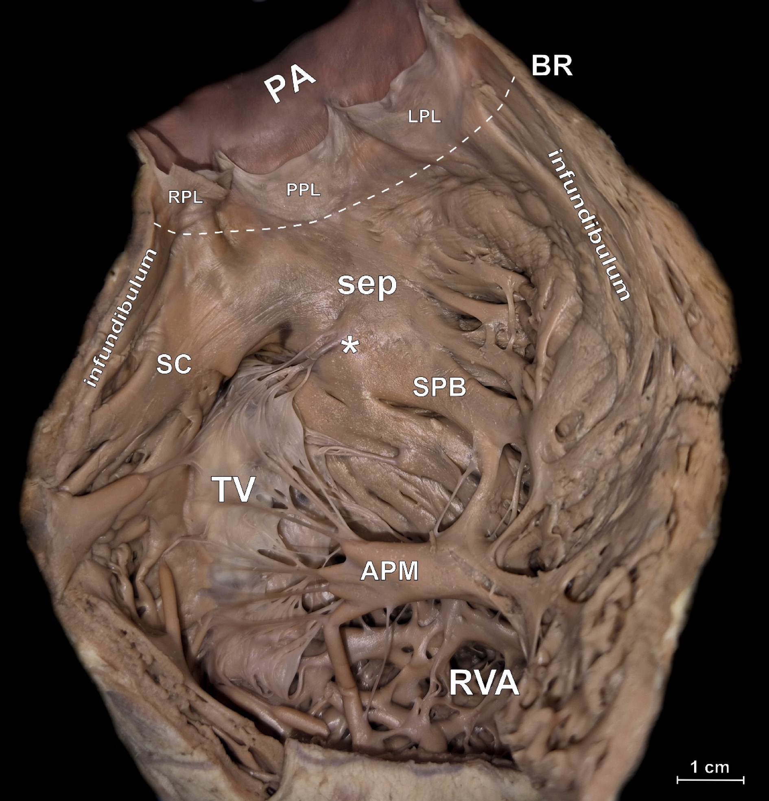
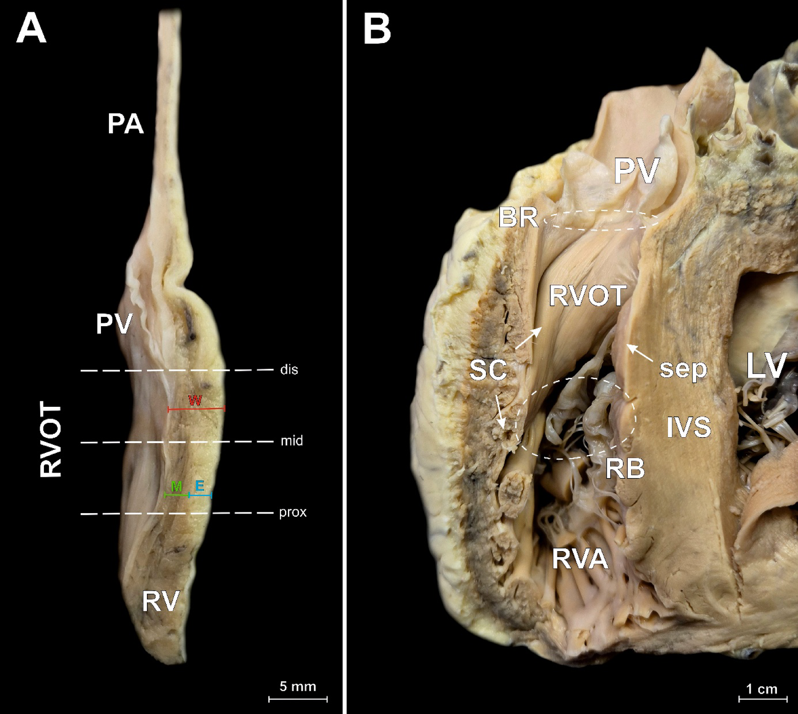
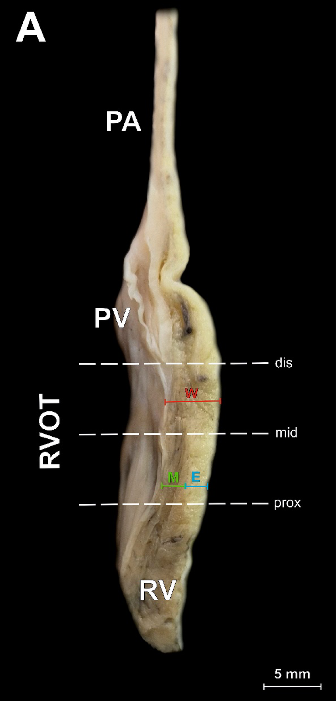
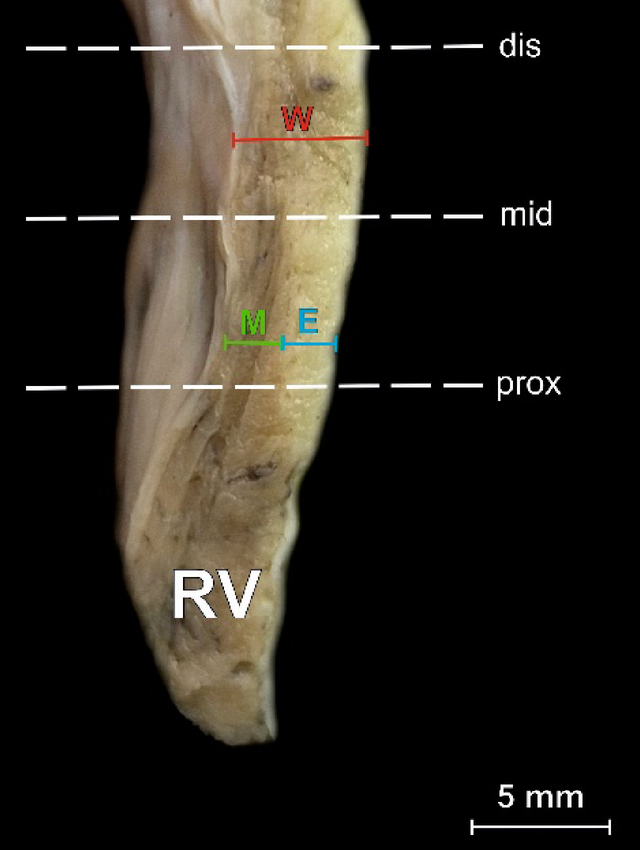

From the anterior surface to an opened outflow tract
Three source-labelled photographs from a study of 220 adult forensic-autopsy hearts without macrostructural cardiac abnormalities. Hearts were fixed in 10% formaldehyde for two months; this does not certify globally healthy donors or live geometry. Specific photographed donor identities are unreported: the views are independent examples, not a registered dissection sequence or valve cycle.
Anterior relationships and the RVOT location overlay

- Ao · PA
- Aorta · pulmonary artery
- RAA
- Right atrial appendage
- RV · LV
- Right · left ventricle
- BR · RB
- Basal ring · RVOT base
- A · R · L · P
- Author-defined anterior, right, left and posterior RVOT peripheries
The caption identifies an anterior view in anatomical position. The dashed cylinder and periphery labels schematically locate the RVOT; they are author overlays, not an exposed lumen or a measured transparent wall.
Jakiel et al. (2025), Right ventricular outflow tract morphology and its clinical significance for invasive procedures, Figure 1 · CC BY 4.0. Complete 1890 × 1896 native source PNG unchanged; original annotations and bars retained, no crop, recoloring or new anatomical marks.
Source preparation, orientation and native records · Exact hashes and public reproduction record
Pulmonary leaflets and the right atrioventricular apparatus

- RPL · LPL · PPL
- Right anterior · left anterior · posterior pulmonary valve leaflets
- TV
- Tricuspid/right atrioventricular valve; the bitmap prints TV, while the caption uses RAVV
- BR · sep
- Basal ring · RVOT septal component
- SC · SPB
- Supraventricular crest · septoparietal band
- APM · RVA
- Anterior papillary muscle · right ventricular apical part
- *
- Source: septal band/septal papillary muscle
The right ventricular wall, pulmonary root and pulmonary artery were cut along their right peripheries to expose the posterior RVOT wall. Preserve the source view: image directions are not newly assigned patient axes. The visible fixed/dissected leaflet positions do not show systolic opening or diastolic closure.
Jakiel et al. (2025), Right ventricular outflow tract morphology and its clinical significance for invasive procedures, Figure 2 · CC BY 4.0. Complete 1890 × 1970 native source PNG unchanged; original annotations and bars retained, no crop, recoloring or new anatomical marks.
Source preparation, orientation and native records · Exact hashes and public reproduction record
Cut walls and the neighboring ventricular relation

- A · W/M/E
- Panel A: whole wall / myocardium / epicardial adipose tissue thickness markings
- prox · mid · dis
- Proximal · middle · distal sampling levels, not cardiac phases
- B · RVOT/IVS/LV
- Panel B: right ventricular outflow tract / interventricular septum / left ventricle
- PA · PV · BR
- Pulmonary artery · pulmonary valve · basal ring
- SC · sep · RB · RVA
- Supraventricular crest · RVOT septal component · RVOT base · right ventricular apical part
Panel A is an enlarged cut section through the anterior RVOT wall. Panel B shows the relation of the anterior and posterior RVOT walls to septal and left-ventricular tissue. These are cut preparations, not natural external surfaces. The original bars apply separately: 5 mm to A and 1 cm to B.
Jakiel et al. (2025), Right ventricular outflow tract morphology and its clinical significance for invasive procedures, Figure 4 · CC BY 4.0. Complete 1890 × 1692 native source PNG unchanged; original annotations and bars retained, no crop, recoloring or new anatomical marks.
Source preparation, orientation and native records · Exact hashes and public reproduction record
RVOT wall layers — enlarged source panel


W whole wall · M myocardium · E epicardial adipose tissue. prox/mid/dis: proximal/middle/distal levels; PA pulmonary artery, PV pulmonary valve, RV right ventricle.
W whole wall · M myocardium · E epicardial adipose tissue. prox/mid/dis: proximal/middle/distal sampling levels; RV: right ventricle.
The source’s 5 mm bar applies to this cut preparation. The full Figure 4 above retains Panel B and its separate 1 cm bar; these bars are not interchangeable.
Jakiel et al. (2025), Figure 4A · CC BY 4.0. Exact source crops: full Panel A online and the lower cut-wall region in print. Source pixels, measurement marks, sampling guides and the complete 5 mm bar remain unchanged.